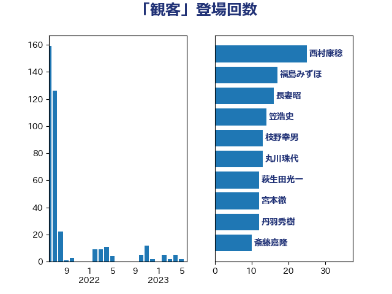

単語「観客」

| 西村康稔 | 自由民主党 | 25 回 |
| 福島みずほ | 社会民主党 | 17 回 |
| 長妻昭 | 立憲民主党 | 16 回 |
| 笠浩史 | 無所属 | 14 回 |
| 枝野幸男 | 立憲民主党 | 13 回 |
| 丸川珠代 | 自由民主党 | 13 回 |
| 萩生田光一 | 自由民主党 | 12 回 |
| 宮本徹 | 日本共産党 | 12 回 |
| 丹羽秀樹 | 自由民主党 | 12 回 |
| 斎藤嘉隆 | 立憲民主党 | 10 回 |
| 田島麻衣子 | 立憲民主党 | 9 回 |
| 柴田巧 | 日本維新の会 | 8 回 |
| 谷田川元 | 立憲民主党 | 6 回 |
| 蓮舫 | 立憲民主党 | 6 回 |
| 後藤祐一 | 立憲民主党 | 6 回 |
| 石川大我 | 立憲民主党 | 5 回 |
| 志位和夫 | 日本共産党 | 5 回 |
| 山田太郎 | 自由民主党 | 5 回 |
| 小沢雅仁 | 立憲民主党 | 5 回 |
| 吉川元 | 立憲民主党 | 5 回 |
| 杉尾秀哉 | 立憲民主党 | 3 回 |
| 吉川沙織 | 立憲民主党 | 3 回 |
| 野村哲郎 | 自由民主党 | 2 回 |
| 紙智子 | 日本共産党 | 2 回 |
| 石垣のりこ | 立憲民主党 | 2 回 |
| 田村智子 | 日本共産党 | 2 回 |
| 永岡桂子 | 自由民主党 | 2 回 |
| 柚木道義 | 立憲民主党 | 2 回 |
| 末松信介 | 自由民主党 | 2 回 |
| 工藤彰三 | 自由民主党 | 2 回 |
| 岸田文雄 | 自由民主党 | 2 回 |
| 山井和則 | 立憲民主党 | 2 回 |
| 奥野総一郎 | 立憲民主党 | 2 回 |
| 塩川鉄也 | 日本共産党 | 2 回 |
| 吉良よし子 | 日本共産党 | 2 回 |
| 加藤勝信 | 自由民主党 | 2 回 |
| 佐藤英道 | 公明党 | 2 回 |
| 伊藤孝恵 | 国民民主党 | 2 回 |
| 井野俊郎 | 自由民主党 | 2 回 |
| 三谷英弘 | 自由民主党 | 2 回 |
| 高橋はるみ | 自由民主党 | 1 回 |
| 高木啓 | 自由民主党 | 1 回 |
| 須藤元気 | 無所属 | 1 回 |
| 辻元清美 | 立憲民主党 | 1 回 |
| 赤池誠章 | 自由民主党 | 1 回 |
| 西村智奈美 | 立憲民主党 | 1 回 |
| 藤巻健太 | 日本維新の会 | 1 回 |
| 船田元 | 自由民主党 | 1 回 |
| 羽田次郎 | 立憲民主党 | 1 回 |
| 篠原孝 | 立憲民主党 | 1 回 |
| 笠井亮 | 日本共産党 | 1 回 |
| 石川香織 | 立憲民主党 | 1 回 |
| 牧義夫 | 立憲民主党 | 1 回 |
| 泉田裕彦 | 自由民主党 | 1 回 |
| 河野太郎 | 自由民主党 | 1 回 |
| 横沢高徳 | 立憲民主党 | 1 回 |
| 柳本顕 | 自由民主党 | 1 回 |
| 松野明美 | 日本維新の会 | 1 回 |
| 松野博一 | 自由民主党 | 1 回 |
| 松沢成文 | 日本維新の会 | 1 回 |
| 早坂敦 | 日本維新の会 | 1 回 |
| 平井卓也 | 自由民主党 | 1 回 |
| 岩渕友 | 日本共産党 | 1 回 |
| 山口壯 | 自由民主党 | 1 回 |
| 山下貴司 | 自由民主党 | 1 回 |
| 小池晃 | 日本共産党 | 1 回 |
| 安江伸夫 | 公明党 | 1 回 |
| 吉田統彦 | 立憲民主党 | 1 回 |
| 勝目康 | 自由民主党 | 1 回 |
| 前川清成 | 日本維新の会 | 1 回 |
| 串田誠一 | 日本維新の会 | 1 回 |
| 世耕弘成 | 自由民主党 | 1 回 |